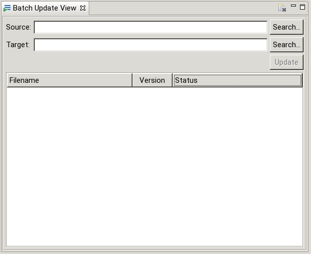
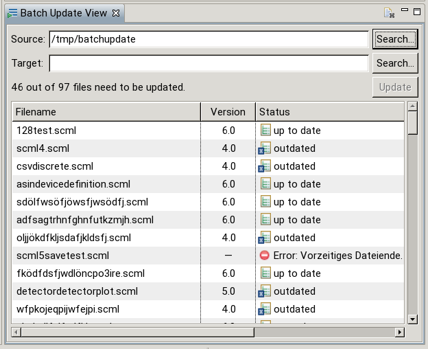
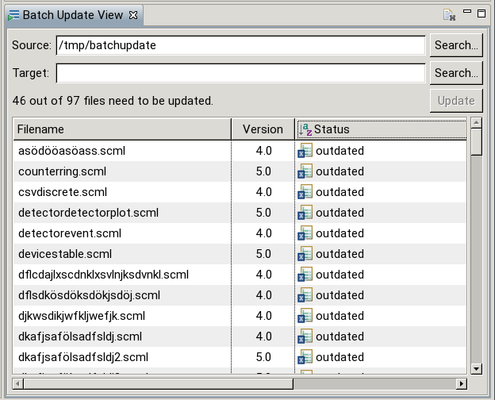
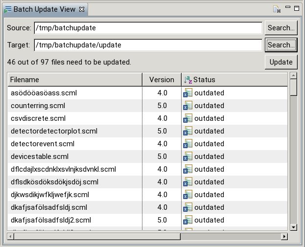
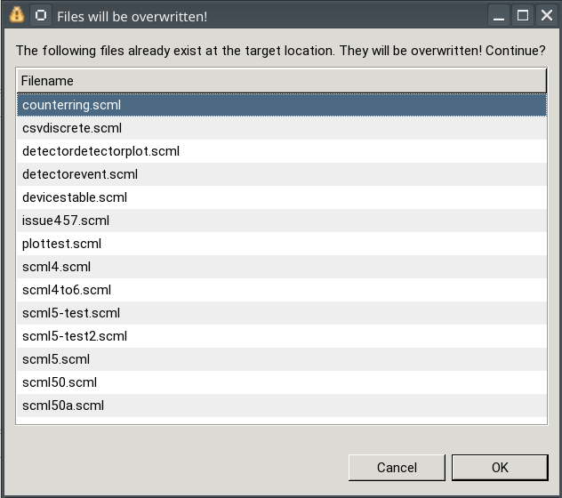
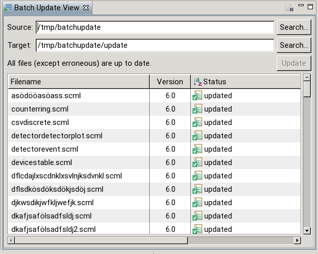

The following shows an example of updating multiple scan descriptions within the Batch Update View.
If the view is not already open it can be opened with Window -> Show View -> Other -> EVE Editor -> Batch Update View:

After selecting a source folder (by clicking on the Search Button) all files in the given directory will be analyzed. The table shows all scan descriptions found. After a short delay the current version and file status should also be shown. The label above the table shows the number of files found as well as the number of files that will be updated:

The table columns can be sorted by clicking on them (additional clicks toggle between A->Z, Z->A and no sorting):

After a target (distinct from the source) is select the update could be performed:

After clicking on „Update” the update will be performed in the background. If any files already exist at the target location a warning dialog is shown:

When the updates are finished the file statuses and versions are updated:

Further updates are not possible until a new source and/or target are selected.
For a complete list of file statuses consult the Batch Update View help.